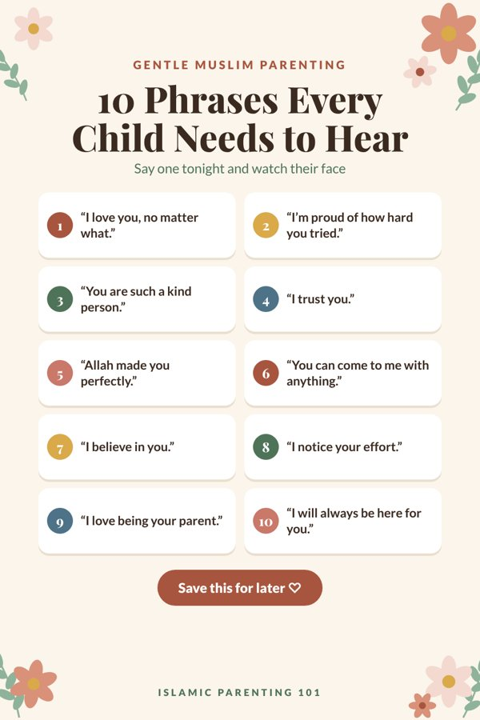

Raise children who love Allah — from the heart.
Gentle, practical Islamic parenting from the Quran and Sunnah. Less yelling, more connection — and children whose good habits grow from a loving heart.

The 4 C's of heart-first parenting
Build the bond first. Without it, every piece of advice feels like criticism.
Children copy what they see. You are their beautiful example.
Introduce Allah with love — as a warm, present reality, not a threat.
Only then, discipline that nurtures (tarbiyah), never humiliates.
Latest from the blog

Teaching Salah by Age: A Gentle, No-Yelling Roadmap
How to teach children salah with love at every age — observe, invite, teach and expect — following the Prophetic timeline.
Ramadan with Kids: 7 Gentle Traditions
Seven simple Ramadan traditions that help Muslim children love the holy month — from cozy suhoor to a family good-deeds jar.

10 Phrases Every Child Needs to Hear
Ten simple, loving phrases that build a child's confidence and connection — inspired by the Prophetic way of speaking to children.
Free Salah Tracker for kids
Print it, stick it on the fridge, and watch the habit grow — one colored box at a time.
Get the free printables